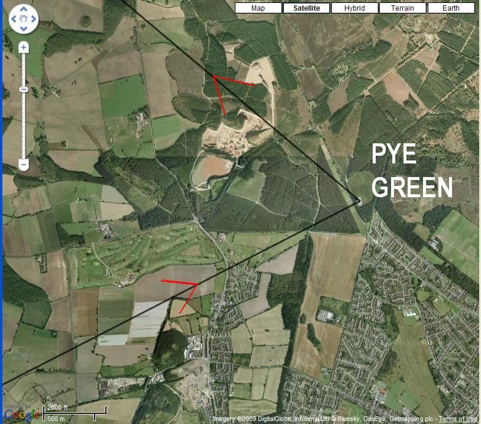

This is a 50km triangle in lovely mid-summer soaring weather in the UK, flying the ASW28 from Seighford Airfield.
The task is in the form of a 'saved flight' that you download to your "Documents\Flight Simulator X Files" folder and can then 'load saved flight' from within FSX or FS2004 and everything will be ready.
| FSX instructions | FS2004 instructions | |||||||||
|---|---|---|---|---|---|---|---|---|---|---|
|
|
The UKVGA forum supports attachments, so you can post your PIREP here and attach the IGC tracklog, which for Sim_logger will be found in the "My Documents\Flight Simulator X Files\UKVGA_Seighford_Task1_50km" folder.
When the flight begins, you will be sitting at the end of the grass runway at Seighford facing NNE, wind is 7 knots from the East, so you'll have a very slight crosswind from the East.
At this point you can swap aircraft for any other glider via the FSX menubar 'select aircraft' option if you wish. But I recommend the ASW28.

You take a launch (either winch or aerotow) to the NE, and then must come around back to the airport to make a start for the first SSW leg to Cosford Airfield.

As you approach Cosford you will be able to see the fairly large airfield approaching. Note the Garmin GPS-NAV on the panel may well switch to the next turnpoint (Pye Green) before you've actually reached Cosford, so keep a visual and make sure you turn within 0.2 nm (0.4 km) of the turnpoint.

After Cosford you should be heading towards Pye Green Tower with a slight headwind, and the Computer Vario in the ASW28 will be telling you your expected arrival height at Pye Green. You should aim to arrive at Pye Green Tower at around 2000 feet, and this will give you sufficient height to fly around the tower and have a straight final glide into Seighford.
Whatever height you turn Pye Green Tower, adjust the Mccready setting on the Computer Vario so that the arrival height for Seighford reads 450 feet (150 meters). For a Mccready of 3 knots (1.5m/s) if you still have the water ballast on board you will be flying at around 90 knots (180km/h).
As you approach Seighford on final glide, remember the airfield height is 312 feet (100 meters) so make sure the reading on the computer vario remains above this figure. The 450 feet suggested above was to give you a 140 foot safety margin.
When you are 2 minutes away from Seighford (120 knots is 2 miles/minute) open the water ballast dump valve. And don't forget to put the wheel down after you beat up the clubhouse after your successful flight!
Don't forget in FSX to click Addons->Sim_logger->Save IGC file after you land, to save the IGC tracklog for your flight.